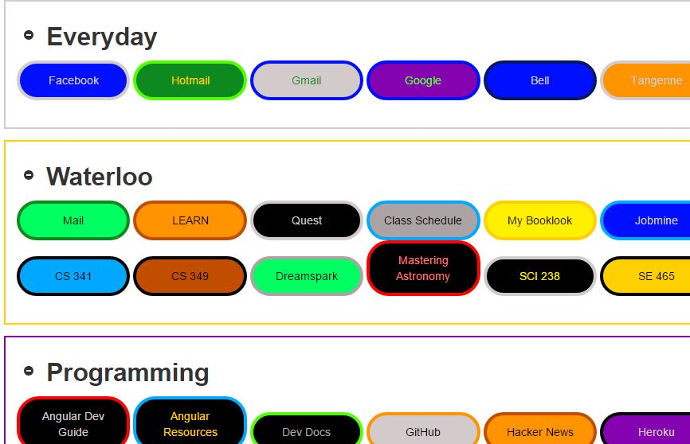
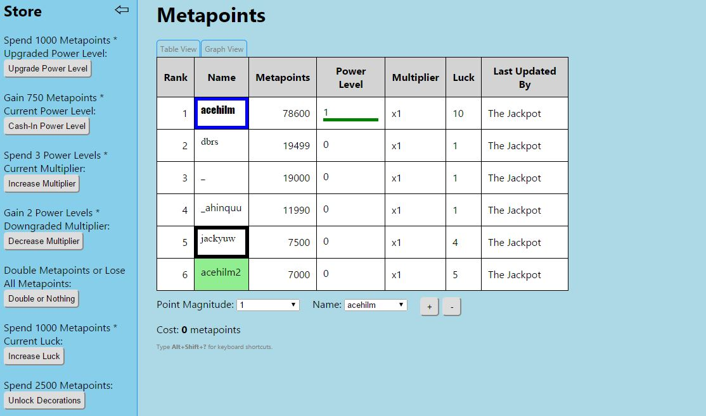
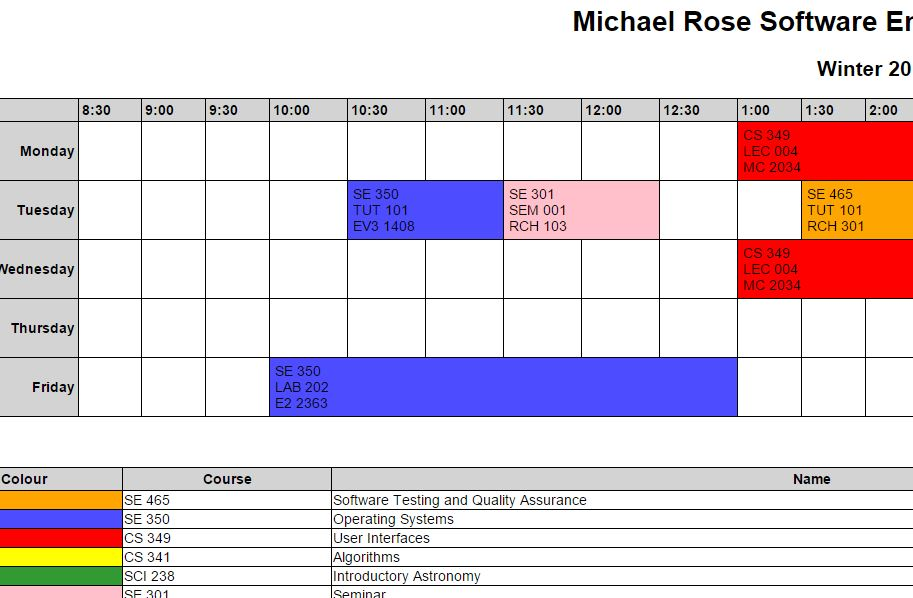
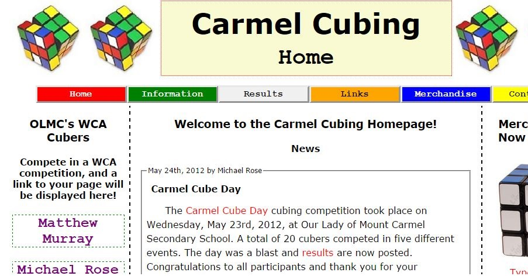

Welcome to my website!
Below are some personal projects of which I am particularly proud. I have a ton of other projects on GitHub; feel free to give them a look, fork/pull-request/make issues - whatever tickles your fancy.
Technology Stack: Ruby on Rails, JavaScript (jQuery), SASS, HAML, RSpec. Hosted on Heroku - check out my personal Linkadex page. A dynamic bookmark management application - have a dedicated, customizable page for your links! Technology Stack: Node.js, Socket.io, AngularJS, MongoDB. Hosted on Heroku: metapoints.herokuapp.com This application was a means for me to learn how to use Node.js and Angular, and it morphed into something of an idle game - you can use your metapoints to buy things that get your more metapoints. There's a lot of hacky stuff here, but I learned so much and really love the real time updates with Socket.io. Technology Stack: JavaScript Some cool drag and drop shenanigans with vanilla JS. Try out the randomly generated live demo to the left, or go a little deeper and use the fiddler to play around with all the options. Ready for a blast of colours? Go see a randomly generated extravaganza. Technology Stack: Ruby, ERB for templating, CSS. Check out the example schedule. A schedule with beautiful colours! Generated from a simple JSON file! My mum likes the horizontal format (and it's easiest to implement), so I'll use this to make her a schedule of my classes every term. Hoping to eventually pull from the uWaterloo API to get the course info. Technology Stack: HTML, CSS, JavaScript Hosted on Heroku: carmelcubing.herokuapp.com This is the first website I ever made. It was for a Rubik's cube club I started in high school. I learned lots of CSS doing this - in hindsight the structure of the code is poor (I was a novice), but I'm very pleased with the final product in terms of appearance.Linkadex

Metapoints

JavaScript Drag & Drop
Schedule Generator

Carmel Cubing
